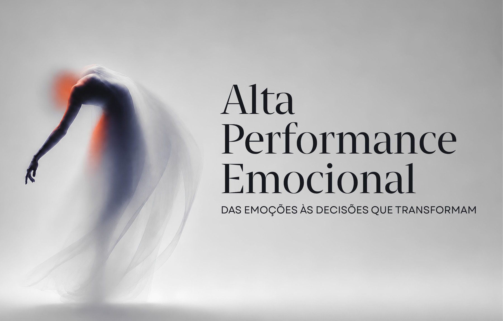
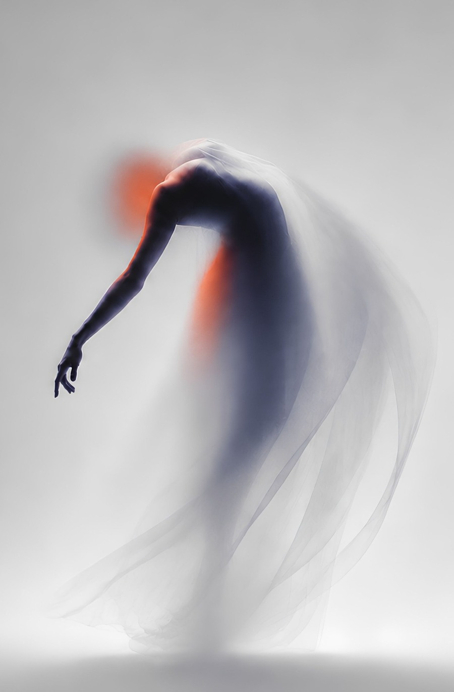
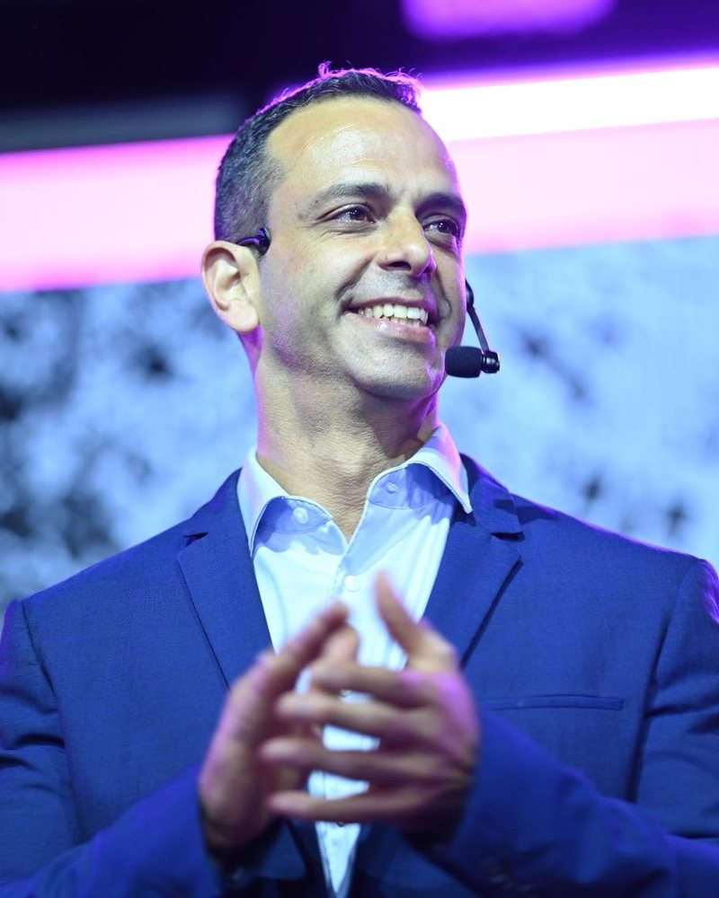

Identificar
Reconhecer emoções, gatilhos, necessidades e os padrões que se repetem, muitas vezes há anos, sem que lhes tivéssemos dado nome.


Um dia dedicado a si · Vila Nova de Gaia
Um encontro íntimo de 150 mulheres, num auditório, ao longo de um percurso de quatro movimentos, para transformar o que sente em decisões claras, ação concreta e um compromisso para os próximos 21 dias.
01 · A promessa
A Alta Performance Emocional não é uma conferência motivacional, clínica ou espiritual. É uma experiência humana e prática, onde cada emoção é tratada como informação, e cada decisão como instrumento de mudança.
Identificar as emoções e os padrões que a estão a limitar, pelo nome e sem julgamento.
Compreender como esses padrões têm moldado, em silêncio, as suas decisões.
Aplicar ferramentas práticas, no seu contexto real, ainda durante o evento.
Assumir um compromisso concreto e mensurável para os 21 dias seguintes.
A emoção informa,
a consciência escolhe
e a ação transforma.
A mensagem central do evento resume o percurso completo e será o fio condutor de cada intervenção, dinâmica e exercício do dia.
Para quem é
Um evento para mulheres profissionalmente ativas: empresárias, gestoras, professoras, profissionais de saúde, comércio ou administração pública. Mulheres que sentem que há uma próxima fase por construir.
Se se reconheceu em pelo menos uma destas frases, este dia foi pensado para si.
Anda em sobrecarga entre a profissão, a casa e todos os que dependem de si.
Está em mudança profissional, ou em insatisfação, e pondera recomeçar.
Sente as alterações emocionais desta fase da vida e quer atravessá-las com serenidade.
Vê os filhos sairem de casa e pergunta-se: «E agora, quem sou eu?»
Está a reconstruir uma relação, ou a sair de uma que já cumpriu o seu ciclo.
Cuida dos pais ao mesmo tempo que cuida de todos os outros. E ninguém cuida de si.
Sente que perdeu confiança, entusiasmo ou propósito, e quer recuperá-los com método.
Quer criar, com intenção e não por acaso, a nova fase da sua vida.
02 · O percurso
Não é uma sucessão de palestras: é uma jornada com começo, meio e compromisso. Acompanhe a linha.
Reconhecer emoções, gatilhos, necessidades e os padrões que se repetem, muitas vezes há anos, sem que lhes tivéssemos dado nome.
Compreender como as emoções influenciam pensamentos, comportamentos, relações e decisões, e onde é que reagimos no automático.
Sair da teoria: cada participante define, com uma ferramenta prática, uma ação concreta para as 72 horas seguintes ao evento.
Transformar a primeira ação num compromisso mensurável para os 21 dias seguintes, com clareza sobre o que, como e quando.
03 · Palestrantes
Terapeutas, coaches, formadoras e especialistas, cada uma com uma peça do puzzle. Sem divagações: só ferramentas e experiência real.
Formadora · Coach · Terapeuta Integrativa · Fundadora da Zá, Live, Love & Liberate
Dedicada ao desenvolvimento humano e à educação emocional, alia experiência pedagógica e ferramentas de transformação pessoal para ajudar cada pessoa a compreender as suas emoções e transformá-las em decisões conscientes, ação e compromisso.
Coach de Resultados Máximos · Especialista em Inteligência e Cura Emocional
Professora de línguas e formadora na área do desenvolvimento pessoal, com certificação em Consciência Sistémica e na filosofia de Louise Hay. Ajuda pessoas a compreenderem e transformarem as suas emoções, relações e padrões, promovendo maior consciência, equilíbrio e capacidade de criar resultados alinhados com quem realmente são.
Especialista em Inteligência Emocional · Analista Comportamental DISC
Foi atleta profissional de andebol durante 11 anos, tendo concluído em paralelo a licenciatura em Engenharia Civil. Estuda comportamento humano desde 2017 e hoje ajuda profissionais e empresários a usar a inteligência emocional como ferramenta de resultado, trabalhando o que está por trás dos bloqueios, para agir com clareza em vez de reagir no automático.

Especialista em Resultados Máximos · Estratégias de Superação e Progresso Comportamental
Atleta e treinador de alta competição com vários títulos, construiu o seu percurso no desporto e na gestão de equipas de uma das maiores redes de ginásios do país. Complementou depois a formação em desenvolvimento pessoal, tendo trabalhado diretamente com referências como Deepak Chopra, Wayne Dyer, Philip Mills e T. Harv Eker. É o único europeu que acompanha pessoalmente o considerado melhor coach do mundo, Anthony Robbins.
Parapsicóloga · Terapeuta · Formadora · Fundadora da Metodologia REHC®, Reprogramação Emocional Humana
Desenvolveu a «Fisioterapia da Consciência», uma abordagem integrativa que combina práticas como a hipnose e o toque visceral. É autora do livro «Búfalo Branco: O Meu Guia Espiritual para Ti». Na sua palestra, «A Fé», convida-nos a reconhecer que, nas nossas memórias, não vivem apenas os medos e as feridas, mas também a força necessária para os transformar.
«Só depende de ti alterares o que te faz mal, e é precisamente no que de pior te aconteceu que reside a tua força.»
Consultora Estratégica de Crescimento de Negócio · Palestrante Nacional e Internacional · Autora
Licenciada em Ciências Económicas e Empresariais, com mais de 13 anos como consultora estratégica e um livro publicado. Através do projeto Mulheres COMetas, ajuda há mais de 5 anos mulheres a saírem da falência emocional e financeira, porque as contas da vida e as contas do coração fazem-se com a mesma moeda: as decisões.
Terapeuta · Mentora de Transformação Pessoal
Licenciada em Contabilidade e Gestão, com mais de 25 anos de experiência profissional. Atua hoje na área do Bem-Estar Integrativo, com especial enfoque na Terapia Shiatsu e na libertação do tabaco através da hipnose. Acompanha pessoas em processos de transformação, ajudando-as a recuperar equilíbrio, presença e liberdade.
04 · A experiência
No coração da tarde, paramos as apresentações. Num ambiente seguro e acolhido, as participantes são conduzidas por uma dinâmica de partilha e por uma meditação guiada. É o momento em que o que se ouviu desce do raciocínio para o corpo, e a mudança deixa de ser uma ideia para passar a ser uma sensação.
É, para muitas, a parte de que mais falam nos dias seguintes.
150 mulheres que partilham a mesma sede de mudança. As pausas, o café e o encerramento são desenhados para criar ligações que duram para além do dia 24.
Ninguém sai apenas inspirada: cada participante escreve e assume um compromisso concreto e mensurável para as três semanas seguintes.
Ambiente cuidado, ao detalhe: materiais de trabalho, photocall, equipa dedicada e uma sala pensada para 150 pessoas, nem mais.
05 · Bilhetes
Lotação limitada a 150 lugares, dos quais 125 em venda pública. Quando esgotarem, abrimos lista de espera.
29 €
Válido a partir de 1 de outubro, após o fecho do Early Bird. Mesmo programa, mesma experiência.
49 € o par
Dois lugares a preço de amizade, com poupança de 9 €. Porque a transformação compromete-se melhor a duas.
Perguntas frequentes
O público-alvo é feminino, e foi a pensar em mulheres que desenhámos a linguagem, as dinâmicas e o ambiente do dia, sobretudo para quem está em fase de mudança ou a construir uma nova etapa de vida. Dito isto, o evento é aberto a todos. Se o seu marido, companheiro ou um amigo quiser vir consigo, é bem-vindo com toda a tranquilidade. Aliás, uma das palestras traz precisamente a perspetiva masculina sobre as emoções.
Não, nenhum. A linguagem é acessível a todas e cada ferramenta é apresentada passo a passo. Basta vir com abertura e vontade de trabalhar sobre si.
As portas abrem às 14h30 para receção e check-in. O programa começa às 15h00 e termina às 19h00, com convívio posterior. Só precisa de trazer consigo mesma. Toda a documentação de trabalho é fornecida no check-in.
Sim, o bilhete é transferível até 48 horas antes do evento, bastando enviar-nos o nome da nova participante pelo WhatsApp.
Reembolso integral até 26 de setembro de 2026; reembolso de 50% entre 27 de setembro e 9 de outubro. Após essa data, o bilhete deixa de ser reembolsável, mantendo-se transferível. Consulte a política completa no rodapé da página.
Sim. O auditório do Centro Paroquial de Mafamude é acessível a cadeiras de rodas e dispõe de estacionamento nas imediações. Se necessitar de algum apoio específico, diga-nos ao reservar e tratamos de tudo com antecedência.
A sala tem lotação máxima de 150 lugares e não pode ser ultrapassada. Quando esgotarem, abrimos lista de espera por ordem de chegada, e entraremos em contacto caso se liberte algum lugar.
Sim. Após a confirmação da inscrição, recebe o documento comprovativo e a fatura eletrónica por email.
Onde e quando
Sábado, 24 de outubro de 2026 · abertura das portas às 14h30, evento das 15h00 às 19h00.
Auditório do Centro Paroquial de Mafamude, Vila Nova de Gaia. Abrir no Google Maps
Estacionamento livre nas imediações do centro paroquial. Recomendamos chegada com 20 a 30 minutos de antecedência.
Espaço acessível a cadeiras de rodas, com lugares reservados na sala. Informe-nos de qualquer necessidade especial ao fazer a inscrição.
Café de boas-vindas à chegada e pausa de tarde com bebidas incluídas no bilhete.
Vila Nova de Gaia · Distrito do Porto, a poucos minutos do centro da cidade, com fácil acesso pela A1, Marginal e transporte público.